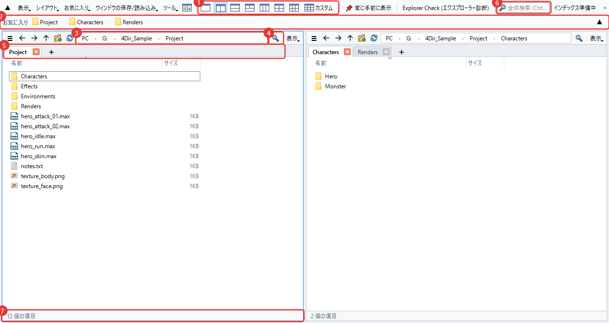
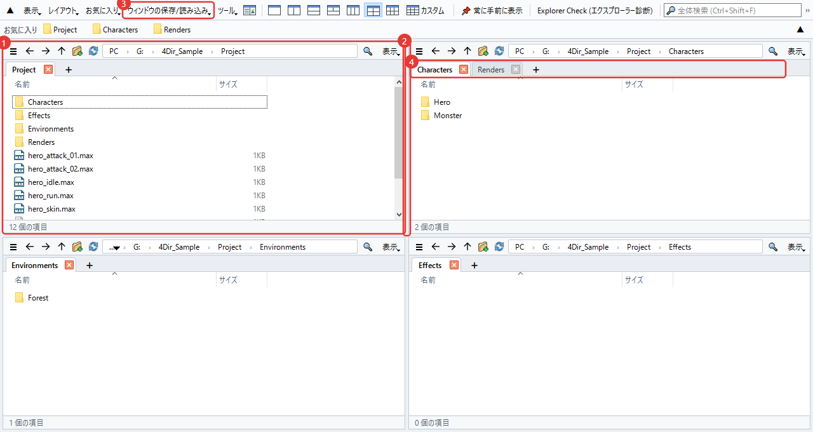
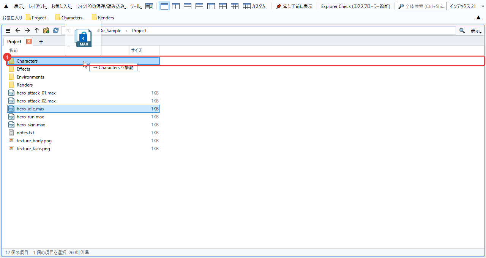
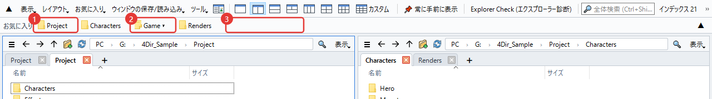
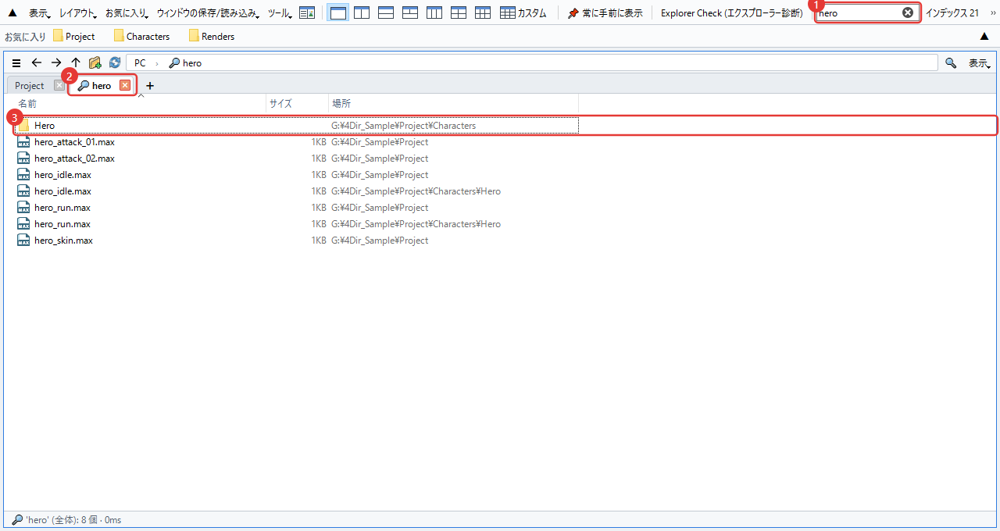
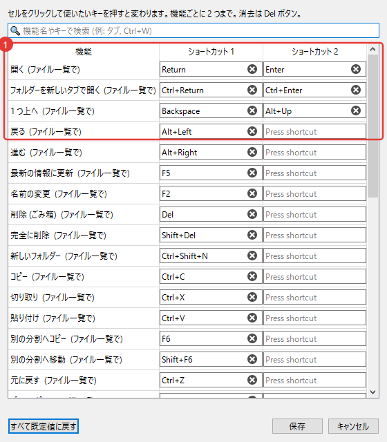
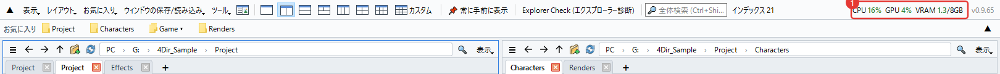
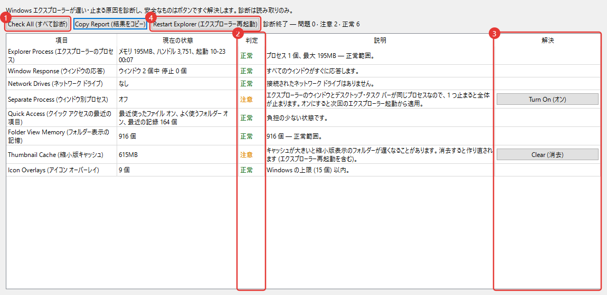

4Dir の使い方
使い始めてすぐ必要になるものから順に書きました。図の赤い番号と本文の番号は対応しています。ショートカットは Windows エクスプローラーとほぼ同じなので、エクスプローラーを使っていた方なら半分くらいはもう知っている内容です。
画面の見かた
1 つのウィンドウにフォルダーをいくつも並べて使うソフトです。上から順に見るとこうなっています。

- 分割ボタン。1・2・3・4・6 分割はボタン 1 回で、いちばん右のカスタムを押すと横と縦の数を自由に決められます（最大 5×4）。
- お気に入りバー。よく使うフォルダーをここにドラッグするとボタンができます。ボタンを右クリックすると名前の変更や削除ができます。
- アドレスバー。パスの一部をクリックすると、そのフォルダーにすぐ移動します。右側の空いている所をクリックすると、文字で入力できるようになります。
- フィルター。今見ているフォルダーの中を名前で絞り込みます。Ctrl+F
- タブ。分割ごとに別々のタブがあります。+ か Ctrl+T で開き、Ctrl+W で閉じます。
- 全体検索。ドライブ全体からファイル名で探します。下の「検索」で詳しく説明します。
- ステータスバー。項目数と、選んだ数・サイズが出ます。
分割とタブ
分割のひとつひとつが小さなエクスプローラーだと思ってください。分割ごとに自分のタブとフォルダーを覚えています。

- 最後にクリックした分割に青い枠が付きます。ショートカットはこの分割に効きます。
- 分割の境目をドラッグすると大きさが変わります。
- ウィンドウの保存/読み込みで、今の分割とタブに名前を付けて保存しておけます。作業ごとに 1 つずつ作っておくと便利です。
- タブはドラッグで順番を変えたり別の分割に移したりでき、ウィンドウの外に落とすと新しいウィンドウになります。右クリックすると Windows エクスプローラーで開くこともできます。
4Dir を閉じてまた開くと、最後の分割とタブがそのまま戻ります。開いたまま PC を再起動しても、次のサインイン時にまた開きます（ツール メニューでオフにできます）。
ファイルの移動・コピー
エクスプローラーと同じやり方で大丈夫です。ドラッグすると落とし先のフォルダーが濃く表示され、横に「→ ○○ へ移動」のように何が起きるかを先に見せてくれます。

- 落とし先のフォルダー。同じドライブなら移動、別のドライブならコピーです。Ctrl を押しながら落とすとコピー、Shift なら移動。
分割が複数あればドラッグしなくてもかまいません。選んで F6 を押すと隣の分割へコピー、Shift+F6 なら移動です。
間違えたら Ctrl+Z。名前の変更、新しいフォルダー、移動、コピー、ごみ箱への削除を 1 つずつ元に戻します。
F2 で名前を変えている途中に ↓ を押すと、そのまま次のファイルの名前の変更に移ります。ファイルを複数選んで F2 を押すと一括で名前を変更ウィンドウが開きます。
右クリック メニューは Windows のメニューをそのまま使っています。圧縮ソフトや TortoiseSVN のメニューもエクスプローラーと同じように出ます。
.webp 画像を右クリック → WebP 変換 → PNG で保存 / JPG で保存。同じフォルダーに新しいファイルができ、元のファイルは残ります（不要なら自分で削除してください）。複数まとめても変換できます。
お気に入り
よく使うフォルダーを上のバーにボタンとして置いておけます。最初は空で、自分で入れたものだけが表示されます（Windows エクスプローラーのクイック アクセスとは別です）。

- お気に入りボタン。クリックすると今の分割でそのフォルダーが開きます。右クリックすると新しいタブで開く、名前の変更、削除があります。ファイルをボタンの上にドラッグすると、そのフォルダーへ移動またはコピーします。
- グループ ボタン（▾）。お気に入りをいくつか 1 つにまとめたものです。クリックすると中の一覧が開きます。フォルダーをグループ ボタンの真ん中に落とすと、そのグループに入ります。
- 空いている所やボタンの間にフォルダーを落とすと、その位置に新しいボタンができます。ボタン同士をドラッグして順番も変えられます。今見ているフォルダーは Ctrl+D ですぐ追加できます。
整理したいものが多いときはお気に入り → お気に入りの整理を開いてください。まとめて削除、順番や名前の変更、グループ作り、もう無いフォルダー探しが 1 つのウィンドウでできます。確認を押すまで反映されません。
ボタンが 1 行に入りきらないときは、バーの右端の ▼ をクリックします。何行かに広げて全部見せてくれます（▲ で 1 行に戻ります）。
Windows エクスプローラーにピン留めしたフォルダーをそのまま使いたいならお気に入り → Windows エクスプローラーのクイック アクセスを取り込む。もうあるものは飛ばします。
検索
上の検索欄に文字を入れるとすぐ探します。最初に起動したときにドライブのファイル名一覧を一度作り、そのあとは変わった分だけ追いかけるので速いです。

- 検索欄。単語を複数入れると全部を含む名前だけが出ます。
*.maxのようなワイルドカードも使えます。Ctrl+Shift+F - 結果は虫めがねのタブで開きます。
- 「場所」列はそのファイルがあるフォルダーです。ダブルクリックで開き、右クリック → ファイルの場所を開くでそのフォルダーに移ります。
どのドライブを探すかはツール → 検索範囲で選びます。ネットワーク ドライブは最初はオフです。
一覧ができる前や範囲外のフォルダーなら、フィルター欄の横の矢印ボタンで、今のフォルダーの下をその場で探せます。
SVN を使っている方へ
作業フォルダーが SVN なら、ファイルとフォルダーに状態マークが付きます。TortoiseSVN が入っていれば、エクスプローラーと同じ絵を使います。

- 緑のチェック。変更なし。フォルダーは中身全体を見ます。
- 赤い感嘆符。変更あり。フォルダーなら、中のどこかにコミットしていない変更があるという意味です。
- 青いプラス。追加予定（まだコミット前）。
- 灰色のはてな。バージョン管理の外のファイル。
お気に入りバーのボタンにも同じマークが付くので、コミットしていないフォルダーが上ですぐ分かります。
大きな作業フォルダーは最初の確認に数秒かかります。その間ステータスバーに「SVN 確認中」と出ます。マークがいらなければ表示 → 表示/非表示 → SVN の状態を表示をオフにしてください。
ショートカットを変える
ツール → ショートカット キーの設定で、機能ごとに好きなキーを決めます。1 つの機能にキーを 2 つまで入れられます。

- 欄をクリックして使いたいキーを押すと、すぐ変わります。同じキーが重なると知らせてくれます。
よく使うものだけ挙げると：Ctrl+T 新しいタブ、Ctrl+W タブを閉じる、Ctrl+N 新しいウィンドウ、Ctrl+L アドレスバー、Ctrl+Shift+C パスのコピー、Alt+Enter プロパティ。
CPU・GPU 使用率を見る
3ds Max のレンダリングやゲームを動かしながら、PC がどれくらい忙しいかを見るために入れた機能です。上のバーの右側に数字が出ます。

- CPU：PC 全体の使用率。GPU：グラフィックボードの使用率。VRAM：グラフィックボードのメモリーの使用量/全体（GB）。60% を超えるとオレンジ、85% を超えると赤に変わります。1.5 秒ごとに更新され、マウスを乗せるとグラフィックボードの名前が見えます。
GPU・VRAM は NVIDIA のグラフィックボードでだけ出ます。ほかのグラフィックボードでは CPU だけです。
システムメモリー（RAM）の使用量は出しません。必要ならタスク マネージャー（Ctrl+Shift+Esc）を見てください。
消すには表示 → CPU·GPU 使用率を表示。ウィンドウを最小化すると更新も自動で止まります。ウィンドウが狭いとメニュー バーの端の » の中に入ります。
エクスプローラー診断 (Explorer Check)
Windows エクスプローラーがよく固まったり遅かったりするときに使う道具です。上のバーの Explorer Check (エクスプローラー診断) かツール メニューから開きます。開くとすぐ診断を始めます。診断は読むだけで、何も変えません。

- Check All (すべて診断)：もう一度診断します。エクスプローラーのメモリー、ウィンドウの応答、ネットワーク ドライブ、フォルダー ウィンドウの別プロセス、最近使った項目、フォルダー表示の記憶、縮小版のキャッシュ、オーバーレイアイコンの数、最近の強制終了の記録などを見ます。
- 判定。正常 / 注意 / 問題 / 参考。隣の欄に理由が書いてあります。
- 解決ボタン。直せる項目にだけ出ます。押すと何を変えるかをもう一度聞き、今のユーザーの設定とユーザー フォルダーだけを触ります。
- Restart Explorer (エクスプローラー再起動)：エクスプローラーが固まったときに終了して起動し直します。開いているエクスプローラーのウィンドウは閉じます。
Copy Report (結果をコピー)で結果を文字としてコピーできます。問題を問い合わせるときに一緒に送ってもらえると、原因探しが早くなります。
そのほか
- ライト/ダークの画面と言語は表示メニューにあります。言語は 4Dir を起動し直すと変わります。
- 4Dir の様子がおかしいときはツール → 問題報告用ログを保存を押して、できた zip を support@4dir.net に送ってください。ログを見て原因を探します。